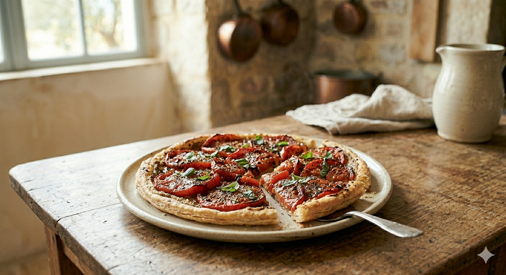

Dans mon grimoire, la simplicité est souvent la clé du régal. Cette tarte fine en est la preuve éclatante. C'est le plat de dernière minute par excellence, une ode aux légumes d'été gorgés de soleil, qui ne demande qu'un peu de chaleur pour révéler toute leur saveur.

Cette recette repose sur un principe immuable : quand les ingrédients sont excellents, inutile de les complexifier. Pas d'appareil à quiche épais, pas de fioritures.
C'est une technique ancestrale, où la force de la moutarde vient contraster avec la douceur sucrée des tomates rôties. Une simplicité redoutable, qui laisse toute la place au parfum puissant des tomates du jardin et des herbes de la garrigue.
1. La Pâte : Préchauffez votre four à 200°C. Déroulez la pâte feuilletée sur une plaque de cuisson recouverte de papier sulfurisé.
2. Le Fond de Tarte : Badigeonnez généreusement le fond de tarte avec la moutarde forte, en laissant un bord libre de 1 à 2 cm.
3. Les Tomates : Lavez les tomates et coupez-les en fines rondelles. Disposez-les harmonieusement sur la moutarde, en les serrant bien les unes contre les autres (elles vont réduire à la cuisson).
4. L'Assaisonnement : Saupoudrez d'Herbes de Provence. Salez et poivrez. Arrosez d'un filet d'huile d'olive.
5. La Cuisson : Enfournez pour 20 à 25 minutes, jusqu'à ce que la pâte soit bien dorée et que les tomates soient légèrement confites. Laissez tiédir quelques minutes avant de servir, parsemé de feuilles de basilic frais.